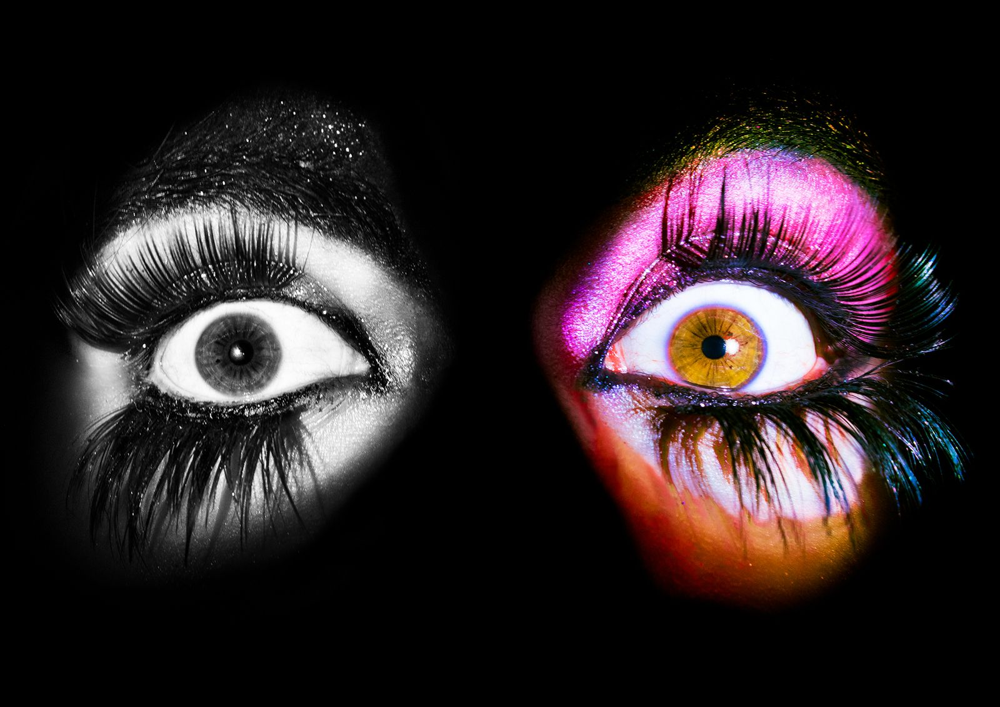
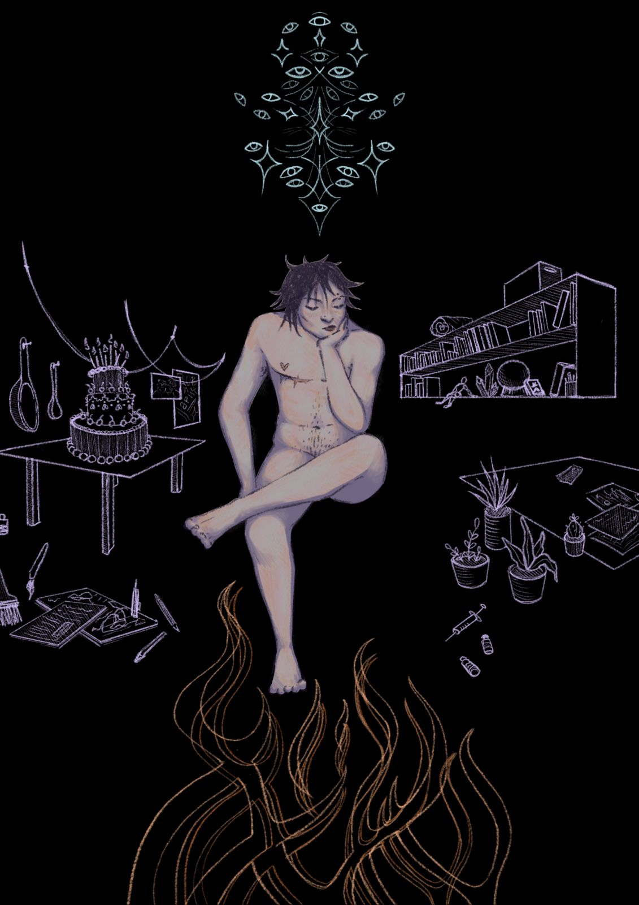
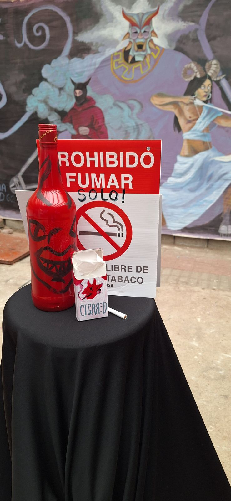
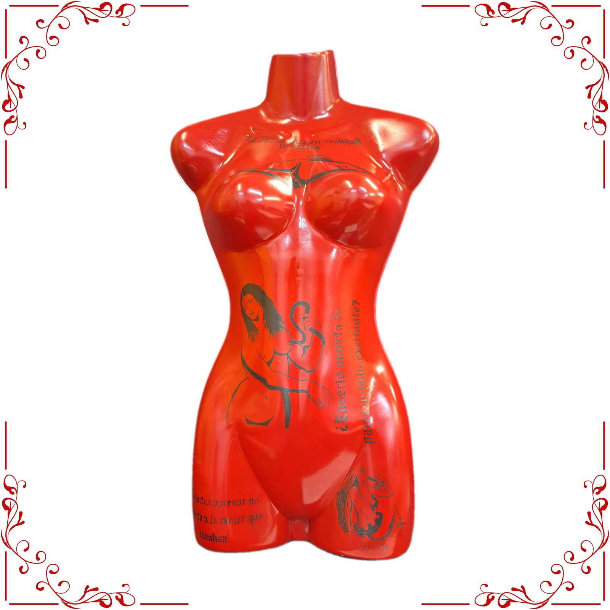
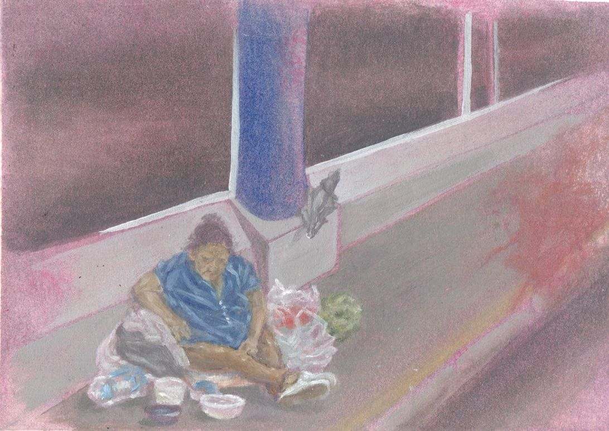
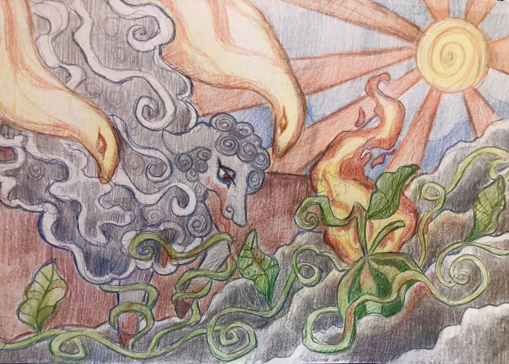
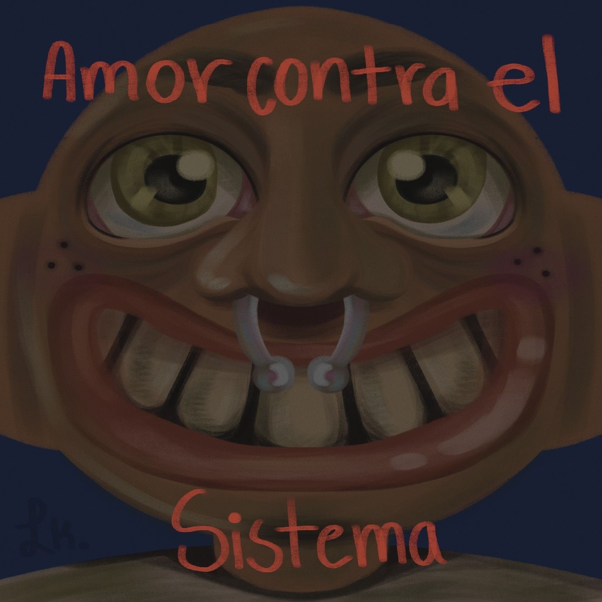
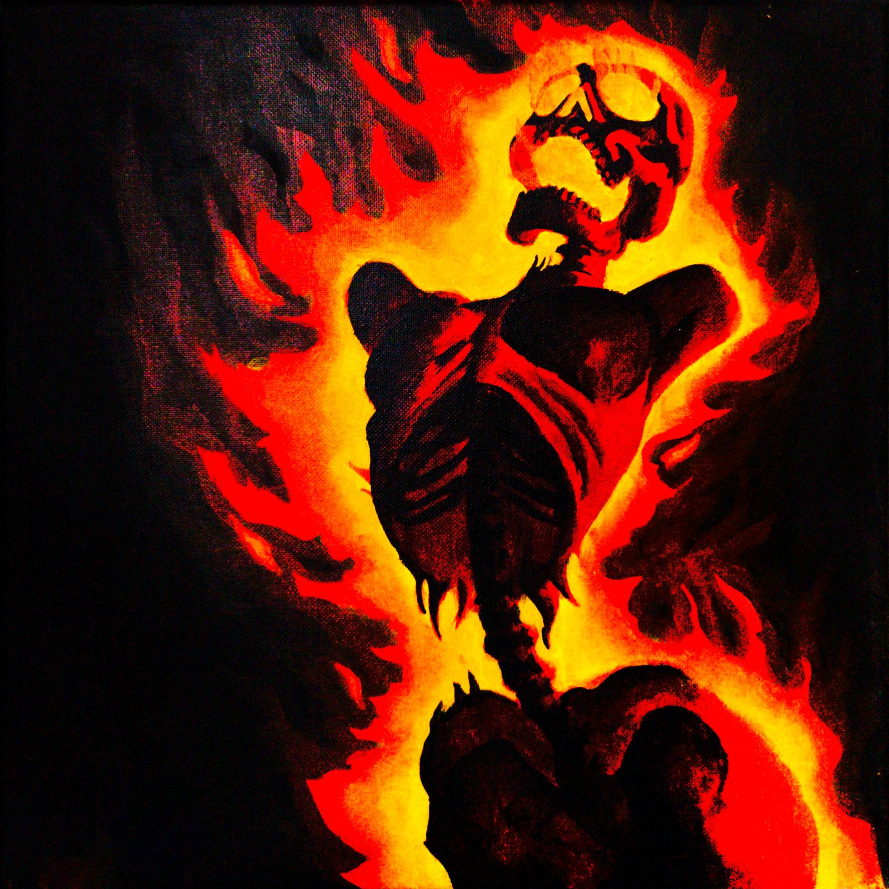
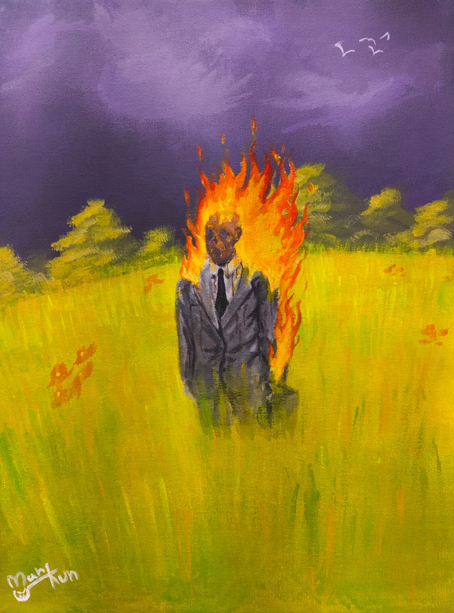
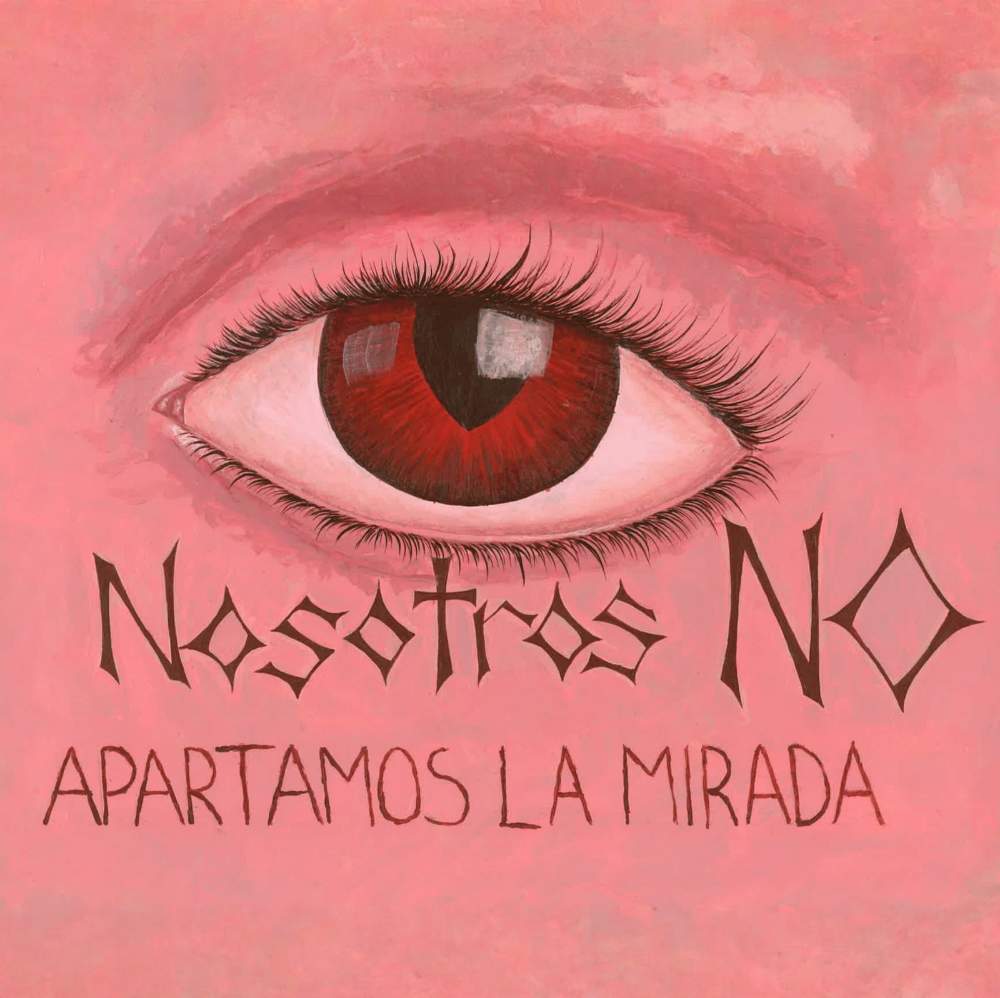

El instinto que propulsa a un animal hacia el salvajismo primigenio es una celebración de la vida en su forma más esencial, un acto sacro que atestigua la pureza en su entorno. Es una pauta hermosa que se erige como un recordatorio de que cada ente vivo reconoce su lugar en el mundo. Es así que con la intención de explorar mis pensamientos más recientes, reinterpreto, a través de esta pintura, un animal que encarna la necesidad de defensa y la fragilidad inherente a su existencia. Un enfoque que se enmarca en un contexto de inocencia y pureza, con la intención de convocar al espectador a confrontar una conexión emocional de su propio comportamiento para con el de los demás seres que habitan su entorno
" onclick="abrirLightbox(0)">
¿Quién decide lo que está bien o lo que está mal?
Por Cristopher Medina Ballestero
2025
Los dejaré a todos boquiabiertos, les demostraré que están equivocados
Sabes... no todo es lo que parece, debajo de todo esto al final somos seres humanos, vivimos en un mundo lleno de odio
No me importa lo que digan, soy solo una estrella ordinaria, yo soy como tú ¿No quieres ser "normal" conmigo?
En el momento en que salgo hay tantas razones para correr y esconderme, no puedo hacer las pequeñas cosas que tanto aprecio, porque son todas esas pequeñas cosas por las que temo ¿Por qué todos se sientan y me miran con sus ojos de odio? ¿Nunca habías visto algo así antes?
No me mires así, me impresionas... así que aquí voy, quiero que el mundo lo sepa, tengo que dejarlo salir y estoy saliendo, hay un nuevo yo saliendo y voy a hacerlo. ¿Cómo que nunca lo supiste? ¿Para salir del closet tengo que gritar?
¡Sal por la puerta!
Pero solo si tú quieres, todos los demás dicen que deberías de hacerlo, solo déjalo atrás, levántate, sal por la puerta grande y ama a alguien, pero siempre amando quien eres
" onclick="abrirLightbox(1)">
Mi casa no tiene puertas ni ventanas, tiene ojos y manos
Por Alessio Díaz
2025
La forma más precisa que he encontrado para explicar mi experiencia como persona
transgénero es la palabra “homesickness” en inglés. Su significado es el sentimiento de extrañar el hogar, esa tristeza de estar lejos de lo que te es familiar: Lugares, personas o cosas que significan algo para ti y que te conocen. Es una extrañeza hacia ti mismx y hacia Ixs que te rodean, el extrañar que te reconozcan por quién eres y el intentar existir fuera de tu lugar seguro. A veces, esta tristeza se manifiesta en pensamientos incesantes sobre el regreso a casa, al ver por la calle rostros familiares que en realidad pertenecen a extraños o buscando reemplazos para los alimentos que generan más nostalgia.
Así es para mí ser transgénero, vivir en un cuerpo que a veces me parece ajeno, rodeadx de
personas que de alguna manera no logran entender lo que me conforma. Para las personas trans, muchas veces es difícil explicar que se extraña algo que tal vez nunca se tuvo, por ejemplo, el deseo de ser percibidx por la sociedad con un género con el que no fuiste asignadx al nacer. Sin embargo, siempre hay algo que te recuerda a lo que perteneces, a eso que estás tratando de recordar o encontrar. El sentimiento de ausencia solo se vuelve totalmente evidente cuando es reemplazado por un sentimiento de pertenencia. Pasas parte de tu vida sintiéndote un extraño, y de repente te ves en un espejo y eres tú; las personas más cercanas a ti te reconocen también. La vida se siente como volver a comer esa comida que tanto te generaba melancolía.
Que alguien te llame un nombre específico, algún hábito que practicas religiosamente o el
olor de un perfume, puede transportarte a esa casita que es tuya, la que siempre ha vivido dentro de tu pecho. Es una experiencia compleja cuya esencia reside en las pequeñas acciones. Esa es la cura que alivia el dolor de extrañar lo que eres: buscar personas que te vean realmente, más allá de este cuerpo de maíz, que teayuden a experimentar y no solo a sobrevivir. Personas con las que estar cerca de una fogata en silencio basta para sentirse aceptadx, que celebren los cambios porque siempre han conocido tu esencia y valoran tu felicidad.
Es acerca de reconstruir el hogar que nunca se tuvo, pieza por pieza, tratando de recordar
lo que te hace feliz sin dejar que entren influencias exteriores, que no te pertenecen. Aunque también es necesario saber reconocer las cosas que siempre encajaron contigo, esas que ya son parte de ti. Este proceso es verdaderamente difícil en una sociedad en la que salir de la norma implica cruzar la línea entre el cielo y el infierno. Incluso cuando estos dos conceptos no hacen referencia a creencias espi ituales, es complicado vivir plenamente cuando tu comunidad está llena de individuos y grupos que odian lo que eres.
Mi vivencia trans, a veces, ha sido simplemente contar los días hasta mi cumpleaños
dieciocho, cuando el estado por fin reconociera el nombre que ya había estado usando por años. Ha sido encontrar pedacitos desperdigados de mi en el arte, en los libros y en la práctica de la magia. Es un proceso constante de construcción y aceptación, como si estuviera en mi naturaleza entender, cambiar y moverme. Al principio bajo la presión de una dicotomía moral, ahora sabiéndome ajenx a estas expectativas, pero herederx de una lucha constante. Es también ahora valorar los pedacitos de hogar que encuentre por el camino, aunque algunas partes de mi casa aún no se sientan mías, ya son partes de mi camino hacia encontrarme.
" onclick="abrirLightbox(2)">
Residencia del Colectivo RED en El Sótano
Por Colectivo RED
2025
La propuesta de RED para el El Sótano es la exploración de la identidad y la propia representación de RED, esto se hace desde tres enfoques o ejes: el histórico, el crítico, y el estético. En el mural están presentes estos tres enfoques como personajes metafóricos que los representan. Por ejemplo, el histórico tiene una máscara que simboliza la búsqueda de referencias y la preservación de la memoria a través de la acción. El crítico es algo más modern, representa lo que hacemos y las luchas sociales que llevamos para romper las viejas cadenas. La representación de la estética es una más andrógina, que tiene el arco porque la estética es como la flecha que atraviesa todo para llevar nuestros mensajes a través de lo artístico
" onclick="abrirLightbox(3)">
Serie de esténciles
Por Wendy Segura
2025
Esta serie de stenciles busca crear una resemantización de la femme fatale a lo largo de la historia, para esto utiliza tres obras: Lilith de Kenyon Cox, La invención colectiva de Rene Magritte y Cleopatra de Giampietrino, creando a la vez una resemantización de la obra y su figura femenina protagonista.
Estos stenciles fue creados como un medio para alzar la voz, por lo que han sido reproducidos mediante graffiti y empapelado por los sectores de San José, San Pedro y Desamparados ¡Me encantaría que algún día te topes alguno! :)
Esténcil 1
La figura de Lilith fue resemantizada mediante la frase “El macho opresor no soporta a la mujer que idealiza”, como una forma de criticar el discurso de los estándares femeninos actuales que tanto nos aquejan y limitan, con sus estándares imposibles de cumplir. Se burla del sistema que nos impone un estándar, pero cuando una mujer lo cumple se convierte en un demonio malvado devora hombres que odia la maternidad -como Lilith-.
Esténcil 2
Durante de la edad media las sirenas eran consideradas monstruos seductores, mujeres hermosas que seducían con su canto para atrapar a los hombres; más tarde, durante el romanticismo del s.XIX la representación de la sirena tomó una fuerte carga erótica. A esta representación se le agregó la frase “La sirena que en realidad te excita”, como una crítica a la erotización y sexualización de la mujer, donde se le reduce como individuo a solamente su ámbito sexual, sin importar su cabeza: pensamientos, deseos, inteligencia o ideales.
Esténcil 3
Cleopatra en su tiempo fue una figura política importante, decidida y comprometida con sus ideales, pero que fue despojada de estas características y posterior a su muerte fue descrita como un fatale monstrum, infiel e incluso fue llamada prostituta. Durante los siglos XV, XVI y XVII su figura también fue fuertemente erotizada, específicamente el momento de su suicidio. Cleopatra fue resemantizada mediante la frase “¿Enserio muerta te parezco más excitante?” creando una deconstrucción al centro de la mujer ideal, una despojada de sus ideales y su poder para entregarse únicamente a su sexualidad, una que está regida por la complacencia hacia el hombre. Personalmente, y viviendo en un sector geográfico tan violentamente machista como lo es América Latina esta frase recuerda hirientemente los casos diarios de violencia, violación, feminicidio y necrofilia. La obsesión por la mujer dominada –aunque para lograr dominarla haya que matarla-.
" onclick="abrirLightbox(4)">
Las calles de la GAM
Por Gabriel Jiménez
2025
El siguiente aporte trata de esas preguntas que aparecen cuando se ve este tipo de escenarios en las calles de la gran área metropolitana. Parece ser que los sectores públicos se prestan para distintas actividades y al menos en este caso, las autoridades no aparecen para apoyar la situación. El pueblo se ve cada vez más cómodo con el entorno en el que viven unos pocos, y es por eso que con esta pintura se viene a plantear distintas preguntas que surgen después de vivir día con día con la desigualdad de oportunidades y las consecuencias de nuestros actos como individuos en una sociedad regida por el “neoliberalismo”. Producir parece ser nuestro único camino y al final, ¿si no somos útiles para el sistema que terminamos siendo?
-¿Qué le habrá pasado a esta persona para encontrarse donde está?
-¿Cuánto tiempo lleva viviendo en situación de calle?
-¿Dónde están las instituciones de gobierno que brindan servicios de apoyo? ¿Será que se cansó de recibir esa pequeña ayuda? ¿O será que eso no suplía sus verdaderas necesidades?
-¿Existirá un sentimiento de comodidad dentro de la incomodidad que vive?
-¿Cuándo habrá tenido su última comida digna? ¿Cuándo habrá dormido bien por última vez?
-¿Querrá esta persona salir de su situación de calle? ¿Cómo podría hacerlo?
-Para los transeúntes de las calles que estamos acostumbrados a estos escenarios ¿creen que se debe intentar cambiar la situación o mejor solo seguir haciéndose de la vista gorda?
-¿Podremos hacer más por las personas que se encuentran en desigualdad? ¿O esto no importa porque "no pertenecemos a ese grupo"?
-¿Cuál es la ayuda realmente necesaria? ¿Cómo se solucionan los problemas estructurales?
" onclick="abrirLightbox(5)">
La oveja y la semilla
Anónimo
2025
Palestina, un pueblo desolado, atrapado en sombras de desesperación y caos, que yace ahora infértil, sin la posibilidad de engendrar siquiera un grano de arroz. Abandonado, a la deriva, sus llanuras cubiertas por un amargo gris son ahora irrigadas por solo sangre y lágrimas, y se sepultan a su paso sueños y anhelos que alguna vez florecieron como amapolas bajo la sombra de los olivos.
Aquel fragmento de miseria que alguna vez fue llamado hogar está siendo devorado por un rebaño de ovejas cuyo pelaje se confunde con las nubes del cielo en época de tormenta seca; frondosas y esponjosas que absorben y disimulan, con su rica lana, toda muestra de maldad y sufrimiento.
A diario recorren este desierto de cenizas con sus pesadas pezuñas de titanio, dejando tras de sí un sendero de huellas tan profundas que terminan formando pequeños lagos magentas, con los que después sacian su bestial sed. Gozarán de una apariencia dócil, pero se alían con ángeles de fuego; emisarios de destrucción que han venido a reclamar la Tierra Prometida entre zumbidos de mosca que se escuchan hasta el anochecer.
Negro es el firmamento. Roja, la piel, blancos los semblantes, pero verde la esperanza también. Montañas de cadáveres forman parte del paisaje incluso los de criaturas que apenas acababan de nacer. Pero aún en la barbarie, los cuerpos deformados no se doblegan, intentando despertar en medio del caos provocado por monstruos afelpados, a pesar de una esclavitud dictada por un sol fulgurante que los quema lentamente, desde mucho antes del ayer.
Las almas agonizantes aún guardan aliento, y de los escombros algún día piensan germinar como semillas de sandía, reconquistando cada rincón con sus raíces jugosas y dulces. Y cuando estas sean lo suficientemente largas, bajarán del cielo el reino de la paz que les fue arrebatado. La Tierra Prometida nunca fue un lugar para pastar, sino para cosechar y cultivar bondades. Para dejar morir, únicamente, la mala hierba del odio sin sentido.
Estoy cansada de esta obra de teatro que solo hace reír a quienes lograron comprar los asientos de primera fila. Telones de humo impiden ver con claridad al verdadero antagonista de esta historia de engaños febriles.
¡Quítenle el traje a las ovejas! Su lana recubre sus rostros endemoniados.
¡Derriben a los ángeles de fuego! No son más que heraldos del odio infundado.
¡Arranquen los telones! No son capas de superhéroes misericordiosos.
Destruyan el escenario. Cambien los papeles. Rompan las cadenas. Dirijamos la función, para que Palestina vuelva algún día a estar dominada únicamente por sueños encapsulados en promesas del mañana.
Que si corre sangre, sea por nuestro coraje; por corazones ardientes como antorchas que cabalgan en nombre de la justicia y la libertad de este pueblo condenado por el silencio y la indiferencia de los otros.
Que si ha de haber guerra, que sea porque el corazón lucha por su autonomía, más allá de la opresión. Entumecer los sentidos ya no es una opción. Los ojos deben estar imbuidos de furia, coraje, rabia: para contraatacar a quienes intentan liderar y representar este genocidio, camuflado de eterna salvación.
" onclick="abrirLightbox(6)">
Amor contra el sistema
Por Lucas Mateo Corrales
2025
Una protesta contra la violencia y el odio de la sociedad actual. Entre tanta furia y dolor, ser tierno y dar amor es revolucionario
" onclick="abrirLightbox(7)">
BURN
Por Manfred "Mankun" Gonzáles
2025
En esta obra quise referirme a la diferenciación de violencia, muerte y cadáver, pues la naturaleza implica el aceptar el fin, es decir, la carcasa: el cadáver (aun con su fuerte carácter desagradable por el factor visual de la descomposición) no está vinculado a la
violencia. El cadáver tiene pechos para validar el que no importa la identidad, es decir, no importa su sexo; no tiene brazos pues no puede intervenir su dolor, esto conecta con la violencia, siendo el concepto que se ve de manera más explícita: fuego que genera una sombra dramática y un cráneo que, aunque no tiene expresión, su mandíbula abierta se traduce a un alarido de queja. La muerte se refleja en el fin, pues vemos el estado en que se encuentra este personaje de la obra, y por lo tanto, entendemos la imagen que seguiría luego de que las llamas se apaguen. El cadáver es lo que queda detrás de la muerte, sin embargo, no remite a la violencia pues detrás de esta muerte violenta, por naturaleza la carne se transforma en un cadáver, descomposición y putrefacción, conceptos que se asocian a un factor negativo por la violencia y el miedo a la muerte, no obstante, incluso fuera de una muerte violenta, la carne termina igual, descompuesta. El objetivo es el criticar la violencia como factor destructivo, el señalar el miedo a la muerte aun siendo esta natural y el aceptar esta última mediante el concepto del cadáver, el cual recibe el nombre de “cuerpo” como analogía en situaciones delicadas.
" onclick="abrirLightbox(8)">
FORCEPS
Por Manfred "Mankun" Gonzáles
2025
Nace de la crítica a la idea del “éxito” y su particular conexión con el hedonismo, eterno consumo y acumulación de riqueza, así como el aceptar esto como la realidad inmutable y hacer que la vida solo tenga esta visión cerrada de producir para tener, llegando al punto donde le pedimos a Dios o universo (véase fuerza mayor) un concepto vacío de intercambio como el dinero, construido por el ser humano y alejado a cualquier idea de espiritualidad. El nombre de la obra remite a instrumento que se usa en partos con complicaciones, haciendo un símil en este hecho de salir a la luz al mundo donde se acepta esta realidad. Se muestra un cadáver trajeado (estatus) mientras se quema, refiriéndose a cómo aun en un entorno tan onírico con un cielo color fantasía y una llanura verde que se dobla, este sufre porque su existencia no remite a un espacio calmo y fuera de la cotidianidad aceptada por todos. Los elementos también tienen otros propósitos, pues el cadáver refleja la muerte inminente y como aun con esta realidad no cambiamos nuestros ideales fuera de la idea monetaria, reflejando poca introspección, pues esto es aprendido y socialmente aceptado, generando que esta “felicidad aceptada” no se vincule a nuestro deseo de paz o vida, de acá el sufrimiento de ser moldeados.
" onclick="abrirLightbox(9)">
No apartamos la mirada
Por Wendy Segura
2025
No apartamos la mirada. Aquí estamos. Con el ojo abierto, ardido, lloroso, pero despierto. Aquí estamos, y no vamos a parpadear. Porque cada parpadeo cuesta una vida, y cada silencio es un voto de complicidad en un país donde ser mujer, cuerpa disidente o niña es una sentencia no escrita, y donde el poder, con voz de presidente, legitima la violencia como si fuera destino. Nosotrxs no nacimos para callar. No fuimos hechxs para tragar dolor ajeno como si fuera propio. Somos un colectivo que arde, una revista que late al ritmo del grito colectivo, y una trinchera de palabras dispuestas a no rendirse. Sabemos que la impunidad tiene nombres, apellidos y rostros. Y si alguna vez alguien con esas máscaras se infiltró entre nosotres, si alguna vez compartimos espacio con una voz que en realidad era eco del machismo, sepan que nos lo pueden decir. Queremos que nos lo digan. Y nosotres actuaremos con la urgencia que la justicia nos reclama. Borramos los nexos. Rompemos los pactos impuestos. Publicamos lo que deba ser expuesto. Y acompañamos en lo que sea necesario: escuchar, visibilizar, abrazar, denunciar, sostener. Esto no es solo arte. Es resistencia. Es refugio. Es fuego. Aquí no hay espacio para la indiferencia. Aquí la lucha no se maquilla, se multiplica. Porque si tocan a una, respondemos todxs.